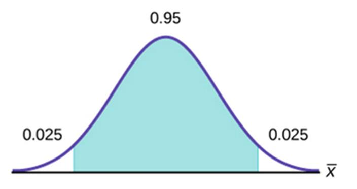

8 December 2026
What can one sample tell us about a population, and how uncertain is that estimate?
The lecture follows the ETF sequence: sampling design → sampling distribution → standard error → confidence interval. We apply the same logic to a mean and a proportion.
A population contains the units about which we want a conclusion. We observe a sample, compute a statistic, and use it to estimate a population parameter.
| Population parameter | Sample statistic |
|---|---|
| Mean \mu | Mean \bar x |
| Standard deviation \sigma | Standard deviation s |
| Proportion \pi | Proportion \hat p=x/n |
A number in Excel is a sample statistic until the population and sampling method justify a broader claim.
ETF’s simple random sample gives each population member an equal chance of selection. The goal is to reduce bias, systematic favouring of some outcomes.
An in-app food-delivery poll misses nonusers. A train survey only at 8–9 am Friday may miss other travellers. A large sample from the wrong frame can still give an invalid population conclusion.
A customer-list survey estimates a population defined by the list. Check:
This check belongs beside every interval, because a narrow numerical interval cannot repair selection or measurement bias.
A retailer emails only loyalty-card members to estimate all customers’ satisfaction. Identify the target population, sampling frame and likely bias. Propose one practical improvement and state which limitation remains.
ETF defines the sampling distribution of \bar x as the distribution of all possible sample means from all possible samples of a fixed size n.
We observe only one mean, but another random sample would usually give another value. Across repeated samples, the mean of \bar x is the population mean \mu; the SD of \bar x is the standard error:
SE(\bar x)=\frac{\sigma}{\sqrt n}.
This is a statement about variation between sample means, not variation between individual observations.
If the population is Normal, the sample mean is Normal for any sample size. For a sufficiently large independent sample, the Central Limit Theorem makes the distribution of \bar x approximately Normal even when the individual data are not Normal.
ETF uses n\ge 30 as a useful classroom guide, with a separate check for severe skewness or outliers. Larger n reduces SE because of the square root in the denominator.
Suppose \sigma=24 units. Compare the standard error of a mean from n=36 and n=144.
The formulas are 24/SQRT(36) and 24/SQRT(144). Quadrupling the sample size halves the standard error. It does not remove selection bias.
A sample SD is 18 units. Calculate s/\sqrt n for n=25 and n=100. Explain in a sentence why the sample SD and the standard error answer different questions.
ETF calls the observed \bar x a point estimate. Because it varies from sample to sample, report a range of plausible values for \mu:
\text{confidence interval}=\text{estimate}\ \pm\ \text{critical value}\times SE.
The confidence level describes the long-run success of this sampling-and-interval procedure. For 95% confidence, 2.5% of the reference distribution lies in each tail.

ETF confidence-area diagram: the central 95 percent and two 2.5 percent tails.
The diagram explains why Excel uses the 97.5th percentile for the upper critical value. The centre is the interval’s coverage target across repeated samples.
When \sigma is genuinely known and the sampling conditions hold:
\bar x\pm z^*\frac{\sigma}{\sqrt n}, \qquad z^*=\texttt{NORM.S.INV}(0.975)\approx1.960 \quad\text{for 95\% confidence.}
The units of the interval match the units of \bar x. The standard error becomes smaller as n grows.
Usually \sigma is unknown, so ETF replaces it with the sample SD s and uses a t critical value with n-1 degrees of freedom:
\bar x\pm t^*_{n-1}\frac{s}{\sqrt n}, \qquad t^*_{n-1}=\texttt{T.INV}(0.975,n-1).
In Excel, T.INV.2T(0.05,n-1) gives the same positive 95% critical value. The t distribution’s extra tail area reflects estimating the SD.
ETF Workshop Week 5 asks about mean outstanding customer balances. A random sample has n=80 and \bar x=\$86.05.
Build separate labelled cells for estimate, SD, n, critical value, SE, lower and upper bounds. The choice of critical value follows the source of the SD.
Use the audit figures in Week 3 estimation data. Construct both 95% intervals in Excel and explain which SD assumption each uses. Compare their widths without calling either interval a range for 95% of individual balances.
The RealEstate sheet in Week 3 proportions data holds 329 properties. For a price interval, do not start with an unlabeled supplied number:
n = COUNT(A2:A330)s = STDEV.S(A2:A330)Check Price units before writing the conclusion. If comparing school-zone groups, use group-specific data and denominators, and do not treat overlap of separate intervals as a formal test of a difference.
With the same point estimate and SD, change 95% to 90% and 99%. A higher confidence level gives a larger critical value and wider interval.
Then change n while holding the SD fixed. More observations reduce the standard error. These are precision effects; neither change fixes a biased sample.
Write a 95% mean-interval conclusion for a named population. Then correct this claim: “95% of the individual balances lie inside our confidence interval.” Explain which distribution the interval describes.
ETF uses \pi for a population proportion and \hat p=x/n for the sample proportion, where x is the count with a named characteristic.
For a shopper outcome, define both the event and the denominator. \hat p lies between 0 and 1. A sample proportion also varies across repeated samples.
For a large enough sample, the distribution of \hat p is approximately Normal. For an interval, use the observed proportion in the estimated SE:
\widehat{SE}(\hat p)= \sqrt{\frac{\hat p(1-\hat p)}{n}}.
ETF’s classroom check requires both n\hat p\ge5 and n(1-\hat p)\ge5. These are counts of observed successes and failures. A rare event near the threshold deserves a cautious interpretation.
\hat p\pm z^* \sqrt{\frac{\hat p(1-\hat p)}{n}}, \qquad z^*=\texttt{NORM.S.INV}(0.975).
The result is a proportion. Multiply endpoints by 100 to report percentages, and use the same denominator in the estimate and standard error. This familiar interval is an approximation, especially for very rare outcomes.
In Marketing, each row is a respondent and Have Tried is column E. ETF’s seminar asks for the proportion who have tried the product.
Count Yes with COUNTIF(E2:E857,"Yes"), count respondents with COUNTA(A2:A857), calculate \hat p=x/n, check x and n-x, then build the interval cell by cell. A PivotTable can check the count; the formulas make the interval auditable.
Estimate the proportion of female respondents who have tried the product. Filter or use COUNTIFS for the numerator and COUNTIF for the female denominator. Construct a 95% interval and write a sentence that names the female customer population, not all customers.
A defensible conclusion says: “Using this sampling procedure, we are 95% confident that the population proportion [or mean] is between the two reported bounds.”
It does not assign 95% probability to a fixed parameter after the sample is observed. It does not make the sample representative. State sampling, independence, approximation and measurement limitations alongside the number.
Population and event → sampling design → count or mean from raw rows → standard error and conditions → critical value → interval → interpretation and limitation.
Next week, a hypothesis test asks whether the data provide enough evidence for a particular claim about that parameter.